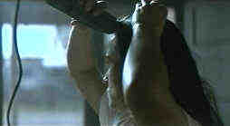

G.I. Jane/B-,A-
Hollywood/1197/125m/WS 2.35Demi does the Navy again, but this time instead of matching wits with Tom Cruise in A Few Good Men, she's matching muscles with Viggo Mortensen. Political maneuvering between Congressional forces and the military sets Moore up, playing Lt. O'Neil, as a symbol for women's equality in the armed services. She's recruited to train as a Navy SEAL, and undergoes severe emotional and physical training designed to weed out the least hardly of the hopefuls.
Director Ridley Scott does a great job with the visual aspects of the training, keeping it swift and dynamic, but the intricacy of the plot bogs down the force of the physical scenes. Look for Demi making mince meat of Mortensen in a knock-down drag-out fight. That and the haircut scene are the highlights. The film would have been much better without the political intrigue in the background. Losing Demi's visit to Washington would have done lots to keep the film focused and you can't help wonder about the timing of the training mission.
 |
Taking off the hair for the sake of art.©Hollywood |
This razor sharp DVD milks everything but anamorphic images from the medium. Every detail in the most difficult and "artistic" lighting circumstances is delivered artifact free. Overall color light balance is excellent and the colors are saturated and true. The Dolby Digital 5:1 surround is first-rate. Big bass compliments lots of ambient information.